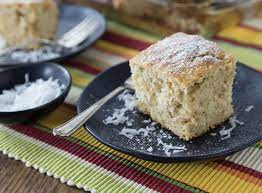

Toto

Jamaican toto recipe - Toto (Pronounced toe toe) is a grain free version
of this Caribbean coconut cake infused with nutmeg, ginger and allspice.
Ingredients
- 1 ½ cup of ground almonds
- ¾ cup of shredded coconut
- ¾ cup of coconut palm sugar
- teaspoon of baking powder
- ½ teaspoon baking soda
- ½ teaspoon of allspice ground pimento
- ½ teaspoon nutmeg
- ½ teaspoon ground ginger
- ½ teaspoon vanilla powder or 1 vanilla pod scraped
- ¼ teaspoon of pink salt
- 4 large eggs separate yolks and egg whites
- ¼ cup of dairy free butter melted (see recipe above)
- 2 tablespoon of almond milk
Steps
Preheat the oven at 180 degrees celsius or gas mark 4
Line a square baking tray with parchment paper and set aside.
In a large bowl, add all of the dry ingredients and combine.
Stir in the melted butter and the egg yolks with the almond milk until
everything is mixed together evenly then set aside.
Whisk the egg whites using a hand handle whisk or an electronic version if
possible until the egg whites form soft white fluffy peaks.
Carefully fold the egg whites into the batter, rotating the bowl with each
fold. If folding in the egg whites appears too difficult, run the batter
with the egg whites in a food processor or mixer for a few seconds only to
combine and ensure the egg whites retain air in order for the cake to be
fluffy.
Pour the cake batter into a square baking tray.
Bake the cake in the oven for 40-50 minutes, it should be golden brown and
firm to the touch. Test the readiness by inserting a skewer, if it comes
out clean, its cooked in it's entirety or continue to cook if the skewer
is left with residue.
Remove the cake from the oven and place on a cooling rack Serve
accordingly.
Store in an air tight container and eat within a few days or freeze for
longevity.